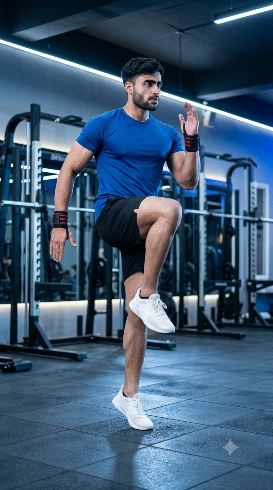

Primary Muscles
Hip Flexors & Quadriceps
Improve Speed, Agility, Endurance & Cardiovascular Fitness
High Knees are a dynamic bodyweight cardio exercise that combines rapid running mechanics with powerful knee drives to improve cardiovascular endurance, speed, agility, and lower-body coordination. This exercise strengthens the hip flexors, quadriceps, calves, hamstrings, glutes, and core while increasing heart rate for effective calorie burning and athletic conditioning. Whether you're warming up, performing HIIT, enhancing running performance, or improving overall fitness, High Knees provide an efficient full-body conditioning workout without requiring any equipment.

Hip Flexors & Quadriceps
Bodyweight
Beginner
Cardio Bodyweight Exercise
Discover the primary and supporting muscles activated during High Knees. This dynamic cardio exercise improves speed, cardiovascular endurance, coordination, and lower-body power by engaging the legs, core, and stabilizing muscles throughout every stride.
The hip flexors lift the knees rapidly while the quadriceps extend the knees and the calves generate quick push-offs, producing fast, powerful running mechanics throughout the exercise.
The glutes extend the hips while the hamstrings assist leg recovery and provide stability during rapid alternating strides, improving lower-body power and running efficiency.
The abdominal muscles stabilize the torso, maintain posture, and efficiently transfer force between the upper and lower body while minimizing unnecessary trunk movement.
The spinal erectors and hip stabilizers help keep the spine neutral, improve balance, and support smooth, controlled movement during fast-paced knee drives.
Discover how High Knees improve cardiovascular endurance, increase speed and agility, strengthen the lower body and core, boost calorie expenditure, and enhance athletic performance through a simple yet highly effective bodyweight cardio exercise.
High Knees quickly elevate your heart rate, strengthening the cardiovascular system while improving aerobic capacity, stamina, and overall endurance during physical activity.
This high-intensity cardio exercise requires continuous movement, increasing energy expenditure and making it an excellent choice for fat-loss programs and metabolic conditioning.
Rapid knee drives improve foot speed, coordination, reaction time, and agility, helping athletes move more efficiently during sports and running activities.
High Knees activate the hip flexors, quadriceps, calves, glutes, and core, improving muscular endurance, stability, and functional movement patterns.
High Knees use only your body weight, making them perfect for home workouts, travel, outdoor training, warm-ups, and fitness sessions where equipment is unavailable.
By improving running mechanics, coordination, balance, lower-body power, and conditioning, High Knees help prepare the body for sports, HIIT workouts, and everyday physical activities.
Follow these step-by-step instructions to perform High Knees with proper technique. Focus on an upright posture, quick foot contact, powerful knee drives, coordinated arm movement, and controlled breathing to maximize speed, endurance, and cardiovascular benefits.
Stand with your feet about hip-width apart, chest up, shoulders relaxed, and core engaged. Bend your elbows to approximately 90 degrees and prepare to move quickly.
Maintain a tall posture instead of leaning backward.
Lift one knee toward hip height while pushing off the opposite foot. Drive the movement explosively using your hip flexors and maintain an upright torso throughout the motion.
Aim to bring your knees to at least hip level for maximum effectiveness.
Quickly switch legs by landing softly on the balls of your feet while immediately driving the opposite knee upward. Keep your movements light, fast, and controlled.
Spend as little time on the ground as possible to improve speed and agility.
Pump your arms naturally in opposition to your legs. Drive your elbows backward rather than swinging across your body to maintain rhythm and balance.
Strong arm action helps increase cadence and overall running efficiency.
Continue alternating your knees at a steady pace while breathing rhythmically. Maintain proper posture and consistent movement until the desired time or number of repetitions is completed.
Focus on smooth, controlled movements before trying to increase your speed.
Avoid these common High Knees mistakes to improve speed, running mechanics, cardiovascular performance, and lower-body efficiency while reducing unnecessary stress on your hips, knees, ankles, and lower back. Proper technique helps you perform every repetition safely and effectively.
Excessively leaning backward reduces core engagement, limits knee height, and places unnecessary stress on the lower back during the exercise.
Maintain an upright posture with your core engaged and your chest lifted throughout every repetition.
Driving the knees only a short distance reduces muscle activation and limits improvements in speed, hip mobility, and cardiovascular conditioning.
Aim to raise each knee to approximately hip height while maintaining smooth, controlled movement.
Landing heavily on your entire foot slows your movement, reduces agility, and increases impact on the ankles, knees, and hips.
Stay light on the balls of your feet and minimize ground contact time to improve speed and efficiency.
Keeping your arms still or swinging them incorrectly disrupts rhythm, decreases balance, and reduces overall running efficiency.
Pump your arms naturally in opposition to your legs while keeping your elbows bent at approximately 90 degrees.
Follow these expert coaching tips to improve your High Knees technique, increase running speed, maintain proper posture, and maximize cardiovascular endurance while performing every repetition safely and efficiently.
Maintain a tall posture with your chest lifted and core engaged throughout the exercise. This improves balance, running mechanics, and efficient force production.
Run tall, not backward.
Actively lift each knee toward hip height using your hip flexors instead of taking short, shallow steps. Higher knee drives increase muscle activation and workout intensity.
Knee to hip height.
Land softly on the balls of your feet with quick ground contact. Light, fast footwork improves agility, speed, and reduces unnecessary impact on your joints.
Quick feet, smooth movement.
Pump your arms naturally in rhythm with your legs to improve coordination, increase cadence, and maintain momentum throughout the exercise.
Arms and legs work together.
Progress from learning proper High Knees technique to improving speed, endurance, coordination, and athletic performance. A structured progression helps maximize results while reducing the risk of injury.
Learn to maintain an upright posture while driving your knees toward hip height with controlled arm movement. Focus on rhythm, balance, and proper running mechanics.
Technique, posture, coordination, and balance.
Perform High Knees for longer time intervals while maintaining quick foot contact and consistent breathing to improve cardiovascular endurance and muscular stamina.
Endurance, conditioning, and movement consistency.
Increase your cadence while maintaining proper knee height and arm drive. Perform High Knees during sprint drills or dynamic warm-ups to develop speed and agility.
Speed, agility, coordination, and running mechanics.
Use High Knees in high-intensity interval training by alternating timed work and recovery periods to maximize calorie burn, conditioning, speed, and overall athletic performance.
Maximum conditioning, cardiovascular fitness, speed, and endurance.
Find answers to the most common questions about High Knees, including muscles worked, calorie-burning benefits, workout frequency, beginner recommendations, and how to perform the exercise safely to improve speed, endurance, and overall fitness.
High Knees primarily target the hip flexors, quadriceps, calves, and core while also engaging the glutes, hamstrings, and lower back to improve running mechanics, balance, and cardiovascular performance.
Yes. Beginners should start at a comfortable pace while focusing on posture, knee height, and coordination. As fitness improves, gradually increase speed and duration.
Yes. High Knees are a high-intensity cardio exercise that increases calorie expenditure and heart rate, making them an effective addition to fat-loss programs when combined with proper nutrition and regular exercise.
Beginners can perform High Knees for 20 to 30 seconds per set, while intermediate and advanced individuals may perform 30 to 60 seconds or include them in HIIT circuits depending on their fitness goals.
No. High Knees are a bodyweight exercise that requires no equipment, making them ideal for home workouts, outdoor training, warm-ups, and travel.
Most people can perform High Knees three to five times per week as part of a cardio, HIIT, or warm-up routine. Allow adequate recovery after high-intensity sessions to optimize performance and reduce fatigue.
Improve speed, agility, cardiovascular endurance, and lower-body conditioning by combining High Knees with these complementary bodyweight and cardio exercises. Together they create an effective conditioning program suitable for all fitness levels.
Continue building your endurance, burning calories, and improving cardiovascular health with our complete collection of cardio exercise guides. Learn proper technique, muscles worked, training tips, common mistakes, and progression strategies for every fitness level.